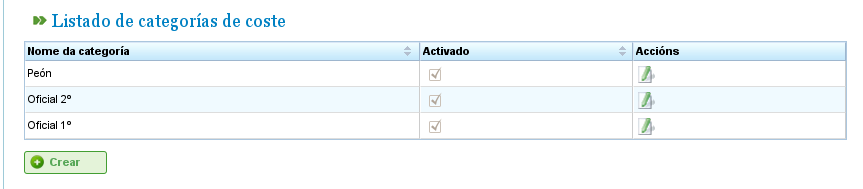

Управление затратами
Затраты
Управление затратами позволяет пользователям оценивать стоимость ресурсов, используемых в проекте. Для управления затратами необходимо определить следующие сущности:
- Типы часов: Указывают типы отработанных часов ресурса. Пользователи могут определять типы часов как для машин, так и для работников. Примеры типов часов: «Дополнительные часы по €20 в час». Для типов часов можно определить следующие поля:
- Код: Внешний код для типа часов.
- Название: Название типа часов. Например, «Дополнительные».
- Ставка по умолчанию: Базовая ставка по умолчанию для типа часов.
- Активация: Указывает, является ли тип часов активным.
- Категории затрат: Категории затрат определяют стоимость, связанную с различными типами часов в течение определённых периодов (которые могут быть бессрочными). Например, стоимость дополнительных часов для квалифицированных работников первого разряда в следующем году составляет €24 в час. Категории затрат включают:
- Название: Название категории затрат.
- Активация: Указывает, является ли категория активной.
- Список типов часов: Этот список определяет типы часов, включённые в категорию затрат. В нём указываются периоды и ставки для каждого типа часов. Например, по мере изменения ставок каждый год может быть включён в этот список как период типа часов с конкретной почасовой ставкой для каждого типа часов (которая может отличаться от ставки по умолчанию для данного типа часов).
Управление типами часов
Для регистрации типов часов необходимо выполнить следующие шаги:
- Выберите «Управление отработанными типами часов» в меню «Администрирование».
- Программа отображает список существующих типов часов.

Список типов часов
- Нажмите «Редактировать» или «Создать».
- Программа отображает форму редактирования типа часов.

Редактирование типов часов
- Пользователи могут вводить или изменять:
- Название типа часов.
- Код типа часов.
- Ставку по умолчанию.
- Активацию/деактивацию типа часов.
- Нажмите «Сохранить» или «Сохранить и продолжить».
Категории затрат
Для регистрации категорий затрат необходимо выполнить следующие шаги:
- Выберите «Управление категориями затрат» в меню «Администрирование».
- Программа отображает список существующих категорий.

Список категорий затрат
- Нажмите кнопку «Редактировать» или «Создать».
- Программа отображает форму редактирования категории затрат.

Редактирование категорий затрат
- Пользователи вводят или изменяют:
- Название категории затрат.
- Активацию/деактивацию категории затрат.
- Список типов часов, включённых в категорию. Все типы часов имеют следующие поля:
- Тип часов: Выберите один из существующих в системе типов часов. Если ни одного нет, необходимо создать тип часов (этот процесс описан в предыдущем подразделе).
- Дата начала и окончания: Дата начала и окончания (последняя необязательна) периода, применимого к категории затрат.
- Почасовая ставка: Почасовая ставка для данной конкретной категории.
- Нажмите «Сохранить» или «Сохранить и продолжить».
Назначение категорий затрат ресурсам описано в главе о ресурсах. Перейдите в раздел «Ресурсы».